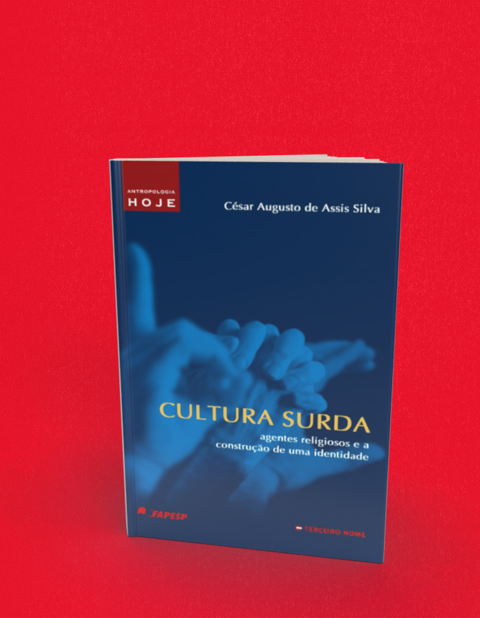

Cultura Surda agentes religiosos e a construção de uma identidade
A compra acontece no site da livraria, em uma nova aba. Consulte lá os preços e a disponibilidade. Procure pelo título ou ISBN deste livro.
- Autoria / créditos
- César Augusto de Assis Silva
- Coleção
- Antropologia Hoje
- Páginas
- 248
- Formato
- 14 x 21 cm
- Acabamento
- brochura
Sobre o livro
Os surdos constituem um grupo com cultura particular? O reconhecimento científico e jurídico da língua brasileira de sinais (libras) é argumento suficiente para a construção da cultura surda? As igrejas cristãs teriam algum papel na história da constituição da libras no Brasil?
Com estas questões em mente, César Augusto Assis Silva insere o leitor num universo pouco conhecido: a comunidade de falantes de libras. Por meio de vasta pesquisa de campo em diferentes instituições religiosas, análise da trajetória de determinados agentes, documentos e entrevistas, o autor explora as relações entre atividades missionárias cristãs, a consolidação de um movimento social surdo, a constituição de um mercado vinculadoà libras e a construção de um campo acadêmico que conferelegitimidade a essa língua.
← Voltar ao catálogo